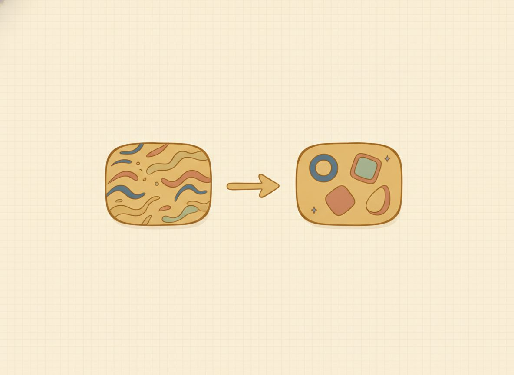

Translating words into expressions and equations
Solving an equation like 4x − 7 = 9 is a move you can already make. The new skill in this lesson is recognizing when a sentence is that equation. You read "7 less than 4 times a number is 9" and you see the algebra hiding inside it. That recognizing-and-rewriting is what we mean by translating, and almost every word problem and real application ahead starts here.
Think of a letter like x as a closed box with a number hidden inside that you don't know yet. When you translate a phrase, the phrase is telling you what to do to that box. "Twice a number" means two of the box. "5 more than a number" means the box with 5 added on.
So before you write a single symbol, do the one thing that prevents most setup errors: say what the box is, in words. Write let x = and finish the sentence, as in "let x = the number." A box with no English label is where setups go wrong.
Picture it as actions on the box, one at a time. "Twice a number" → two boxes → 2x. "5 more than a number" → the box, then 5 added → x + 5. Say the action out loud, then write it down. The words and the symbols line up.
Now the spot that trips almost everyone: order. Take "3 less than a number." Start with the number, the box. Then take 3 away from it. What's left is the box minus 3:
$$x - 3$$
The phrase you read first, the 3, lands second. That feels backwards, so look at why the other reading is a different quantity. If you wrote 3 − x, you'd be saying "3, with the number taken away from it," a different thing entirely.
Here's how to settle it for good: try a number. If the number is 10, then "3 less than 10" is plainly 7. Check both readings against that. The first gives x − 3 = 10 − 3 = 7, which matches, while 3 − x = 3 − 10 = −7, which doesn't. The number test decides it every time, so reach for it whenever an order feels uncertain.
Sentences work the same way, with one extra piece. A verb like is, equals, will be, or results in is the equals sign. Everything before it is the left-hand expression; everything after it is the right-hand expression. Translate each side on its own, join them with =, and you've got an equation you can solve with your Unit 2 tools. "7 less than 4 times a number is 9" splits at is: the left side is "7 less than 4x," which is 4x − 7, and the right side is 9. That's 4x − 7 = 9.

One tempting shortcut is a keyword table: "sum" means +, "of" means multiply, "less than" means subtract. Tables like that are fine as a memory aid, but they quietly fail on exactly the comparisons and reversals you just saw. Remember, "3 less than a number" is not 3 − x.
So lean on the structure first and keep the words only as a backstop. Read what the sentence is doing, not which words it happens to contain.
New words
- 6.1.d1 Translate (in algebra): rewrite an English phrase or sentence as an equivalent algebraic expression or equation.
- 6.1.d2 Expression vs. equation (callback to Unit 1): an expression (x + 5) is a quantity with no equals sign, so there's nothing to solve; an equation (x + 5 = 12) asserts two quantities are equal and can be solved.
Read each worked example slowly, a line at a time, and ask why each line follows from the one above before you go on. The first one carries the order trap, so it's the one to study hardest.
Worked example
6.1.w1 Example 1: phrase to expression (order trap). "3 less than 4 times a number." Let x = the number, so you have a name for the box before anything else. "4 times a number" is 4x. Then "3 less than 4x" takes 3 away from 4x: $$4x - 3$$ Not 3 − 4x. That would be starting from 3 and taking 4x away, a different quantity. Check with x = 10: "3 less than 40" is 37, and 4(10) − 3 = 37. The number test agrees, so the order is right.
6.1.w2 Example 2: phrase to expression (two actions). "A number doubled, then increased by 7." Let x = the number. Do the actions in order: double it first, which is 2x, then increase that by 7: $$2x + 7$$
6.1.w3 Example 3: sentence to equation, then solve. "7 less than 4 times a number is 9." Let x = the number. The word is marks the equals sign. The left side, "7 less than 4x," is 4x − 7; the right side is 9. Now it's an ordinary two-step solve: $$4x - 7 = 9 \;\Rightarrow\; 4x = 16 \;\Rightarrow\; x = 4$$ Check in the original words, not just the symbols: 4 times 4 is 16; 7 less than 16 is 9. That matches the sentence, so x = 4 is right. (If a check like this ever doesn't match, you haven't failed; the check just caught something before it counted. Go back to your first step and re-run the arithmetic slowly. A mismatch is almost always one sign or one small slip, not the whole method.)
6.1.w4 Example 4: sentence to equation, then solve. "The sum of a number and 12 is 20." Let x = the number. "The sum of a number and 12" is x + 12, and "is 20" is the equals sign with 20 on the right: $$x + 12 = 20 \;\Rightarrow\; x = 8$$ Check: 8 + 12 = 20.
6.1.w5 Example 5: the reversal trap (a relationship, not a number). "There are 6 students for every professor; s students, p professors. Write the equation." The tempting move is to read left to right and write 6s = p, but read the structure instead. Students are the bigger group, six times as many of them. The cleanest way to see it is to try the smaller quantity as 1: with 1 professor there are 6 students, so s = 6p. Confirm with another: p = 2 gives s = 12, which is twelve students and two professors, a 6-to-1 ratio. (This is the same "test with a number" move from the order trap, used on a relationship.)
Most of the trouble in this lesson comes from order on "less than" and "subtracted from": "3 less than a number" reads so naturally as 3 − x. After you've set one up correctly, the self-check is the number test from Example 1. Substitute a value and watch the wrong order contradict the plain-English meaning.
A second slip worth knowing, now that you've seen Example 5, is the reversal in a relationship like 6s = p. The same fix catches it, plugging in the smaller quantity as 1.
Try one easy translation before the practice set. Take "twice a number, increased by 1." Let x = the number, double it to 2x, then add 1: 2x + 1. Nothing tricky here: name the box, do the actions in order.
Check yourself
- 6.1.c1 Translate "8 fewer than twice a number," then explain in one sentence why it isn't 8 − 2x. (It's 2x − 8: start with twice the number and take 8 away from it; 8 − 2x would start from 8 instead. Number test: at x = 10, "8 fewer than 20" is 12, and 2(10) − 8 = 12.)
- 6.1.c2 A sentence translates to x − 5 = 11. Invent an English sentence that would produce it. (One answer: "5 less than a number is 11." Anything that takes 5 away from the number and sets it equal to 11 works.)
- 6.1.c3 "A number divided by 3, then increased by 4, is 10." Set up the equation and say which word told you where the equals sign goes. (x/3 + 4 = 10; the word is marks the equals sign. Solving gives x = 18.)
The problems below mix the phrase and sentence types on purpose, which is harder than drilling one kind but makes the skill last. Each has its answer at the end of the lesson. If one stalls you, flip back to the worked example it's built on.
Practice
Translate each phrase to an expression (definition: let x = the number):
- 6.1.1 5 more than a number.
- 6.1.2 Twice a number.
- 6.1.3 3 less than a number.
- 6.1.4 A number doubled, then increased by 7.
- 6.1.5 The quotient of a number and 4.
- 6.1.6 6 less than three times a number.
Translate each sentence to an equation, then solve:
- 6.1.7 The sum of a number and 12 is 20.
- 6.1.8 7 less than 4 times a number is 9.
- 6.1.9 A number doubled and then increased by 7 is 23.
- 6.1.10 3 less than a number is 10.
- 6.1.11 Three times a number is 21.
- 6.1.12 Half of a number, increased by 5, is 11.
- 6.1.13 4 less than 5 times a number is 26.
- 6.1.14 Twice the sum of a number and 3 is 16.
- 6.1.15 A number increased by 8 equals three times the number.
AnswersTry each one yourself first, then open to check.
- x + 5 · 2. 2x · 3. x - 3 (not 3 - x) · 4. 2x + 7 · 5. x/4 · 6. 3x - 6 (not 6 - 3x)
- x + 12 = 20 ⇒ x = 8
- 4x - 7 = 9 ⇒ x = 4
- 2x + 7 = 23 ⇒ x = 8
- x - 3 = 10 ⇒ x = 13
- 3x = 21 ⇒ x = 7
- x/2 + 5 = 11 ⇒ x = 12
- 5x - 4 = 26 ⇒ x = 6
- 2(x + 3) = 16 ⇒ x = 5
- x + 8 = 3x ⇒ x = 4